Treine.
Registre.
Evolua.
O ImberGym é seu diário de treino para academia, casa e ao ar livre: planos, exercícios animados, recordes e estatísticas, além de percursos GPS com Trackshow, nutrição e suplementos. Sem conta, sem nuvem: seus dados ficam no seu celular.
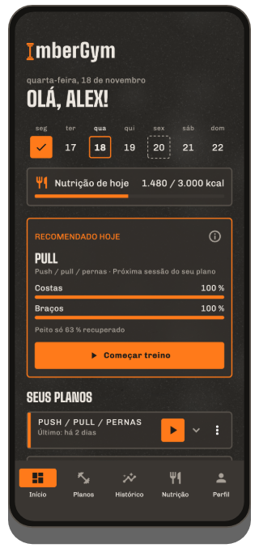
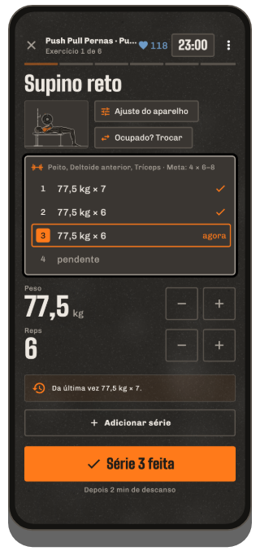
Tudo para treinar.
Num só lugar.
Da primeira série à trilha na montanha – o ImberGym registra, calcula e mostra como você pode evoluir.
Um exercício.
Um foco.
Valores da última vez já preenchidos, sugestão de progressão e descanso até na tela de bloqueio.
A câmera
conta junto
Flexões, agachamentos, prancha – reconhecidos no aparelho, nenhuma imagem sai do celular.
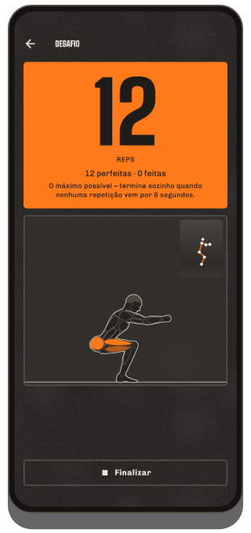
Recordes logo após a série
Intervalos com aviso por voz – também no relógio
Trackshow
Seu percurso GPS como voo de câmera sobre curvas de nível – com destaques para compartilhar.
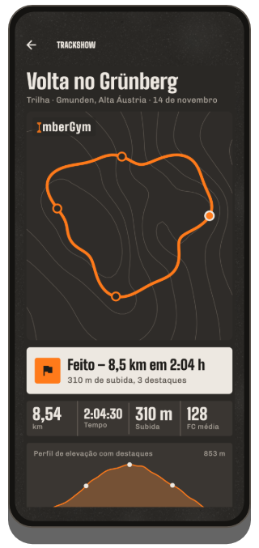
Mapa corporal
e recuperação
Veja quais músculos você treinou – e quais já estão prontos de novo.
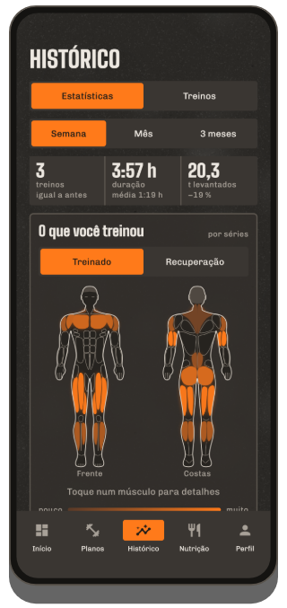
O que o ImberGym faz
Tudo o que você precisa para treinar – sem conta, sem nuvem.
Treino
Progresso
Corpo e nutrição
E mais
O ImberGym por dentro
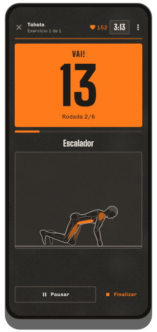
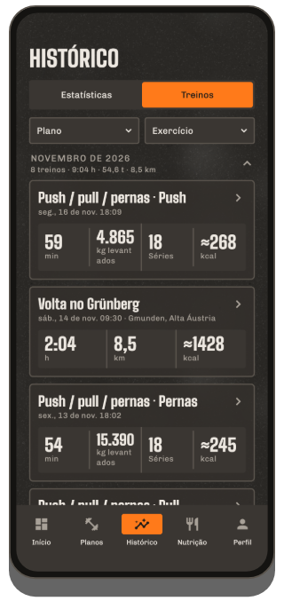
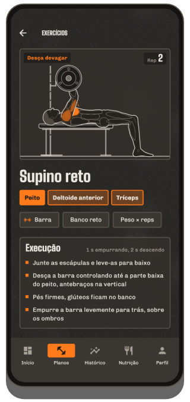
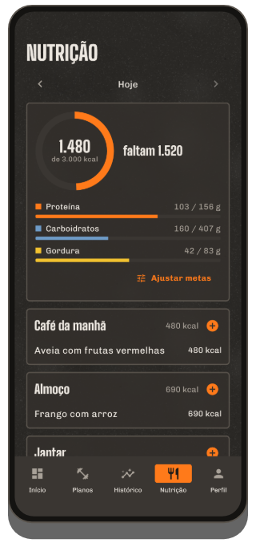
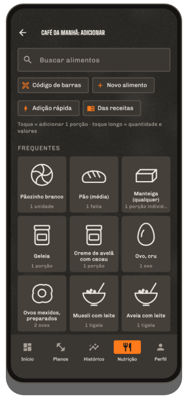
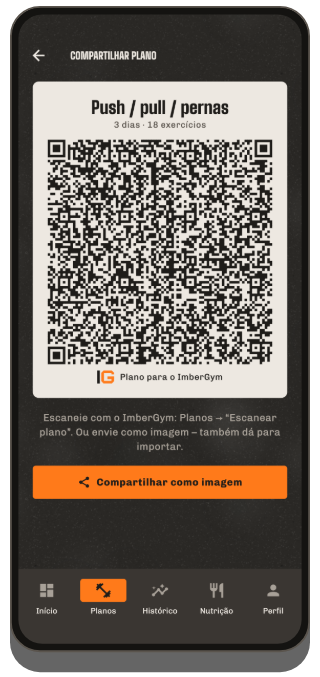
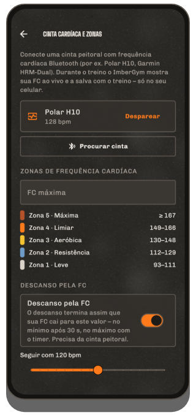
Ao ar livre
Seus dados.
Seu celular.
Instale e comece – sem cadastro.
Tudo salvo no aparelho, backup como arquivo.
Sem rastreadores, sem ferramentas de análise.
Grátis e Premium
Grátis
- Treinos completos com timer de descanso
- Até 5 planos e 5 exercícios próprios, todos os modelos
- Biblioteca de exercícios com animações
- Histórico, recordes, estatísticas, resumo semanal e anual
- Frequência cardíaca do relógio via Health Connect, cinta peitoral ao vivo com zonas e descanso pela frequência
- Suplementos com lembretes, desafio com contador de repetições pela câmera
- Contador de calorias com catálogo de alimentos e código de barras, peso
- Passar planos por QR code, compartilhar treinos como card
Premium
- Planos e exercícios próprios ilimitados, importar planos por QR code
- Mapa corporal, recuperação, evolução de gordura corporal e peso
- Treino intervalado (Tabata e mais)
- Ao ar livre com GPS, Trackshow em vídeo
- App para o relógio (Wear OS)
- Academias, carteirinhas, fotos de progresso
- Todas as receitas, meta de calorias dinâmica
Assinatura mensal ou anual, ou um pagamento único vitalício, pelo Google Play – o preço atual aparece no app. Teste grátis por 7 dias depois do primeiro treino.
Disponível no Google PlayPerguntas frequentes
Ainda tem alguma dúvida? Escreva para mim – eu respondo pessoalmente.
Enviar e-mailPreciso de uma conta?
Não. O ImberGym funciona sem cadastro e sem servidor próprio.
Onde ficam meus dados?
Só no seu celular. Sem nuvem, sem publicidade, sem análise. Mais detalhes na política de privacidade.
O app funciona offline?
Sim. Só duas coisas usam a internet: a busca de um código de barras desconhecido no Open Food Facts e o nome do local de um percurso GPS (para isso o ponto de partida é enviado ao serviço de localização do Android). Todo o resto funciona offline.
Como a frequência cardíaca do meu relógio chega ao ImberGym?
Pelo Health Connect, o armazenamento de dados de saúde do Android. No app do seu relógio, ative o Health Connect e permita “Frequência cardíaca”: Samsung Health, Garmin Connect, Fitbit, Polar Flow, Withings e Zepp (Amazfit), entre outros, fazem isso. Depois toque em “Carregar FC do relógio” nos detalhes do treino no ImberGym. Huawei: o Huawei Health não grava no Health Connect; o app “Health Sync” (Play Store) pode transferir os dados: origem Huawei Health, destino Health Connect, selecione “Frequência cardíaca”. Dica: inicie também um treino no relógio para ele medir continuamente.
Quais cintas peitorais funcionam?
Qualquer cinta peitoral Bluetooth com o perfil padrão de frequência cardíaca, por ex. Polar H9/H10, Garmin HRM-Dual ou Wahoo TICKR. Pareie uma vez no perfil, em “Cinta cardíaca e zonas”: depois ela se conecta sozinha a cada treino.
Como compartilho um plano?
No editor do plano, toque no ícone de QR e mostre o código ou envie como imagem. A outra pessoa escaneia na aba “Planos” com “Escanear plano”, também a partir de uma imagem. O plano inteiro está no código, nada é enviado para a internet.
Celular novo: o que acontece com meus dados?
No perfil, em “Dados e backup”, crie um backup e salve, por ex., no Google Drive. No celular novo, escolha “Celular novo? Restaurar um backup” na primeira tela.
Venho do Strong ou do Hevy: posso trazer meus treinos?
Sim. Importe a exportação CSV do seu app antigo em “Dados e backup” → “Importar treinos”. O ImberGym associa os exercícios e mostra antes uma prévia.
Minhas fotos de progresso são enviadas para a internet?
Não. Elas ficam numa pasta privada do app, não aparecem na galeria e ficam fora até dos backups do Android.
Posso ocultar a nutrição?
Sim. A seção inteira pode ser desativada no perfil: o ImberGym vira um diário de treino puro.
Como apago meus dados?
Registros individuais direto no app; tudo de uma vez desinstalando o app.